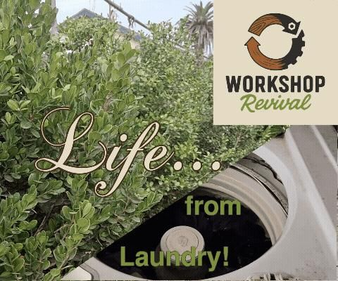
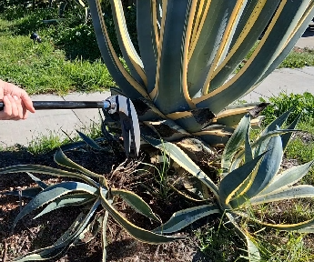

 Life... From Laundry! | DIY Grey Water Filter UpcyclingExperiments View full build on Instructables ↗
 Disc Brake Rotor Becomes a Monster Weed Puller MetalworkingUpcycling View full build on Instructables ↗